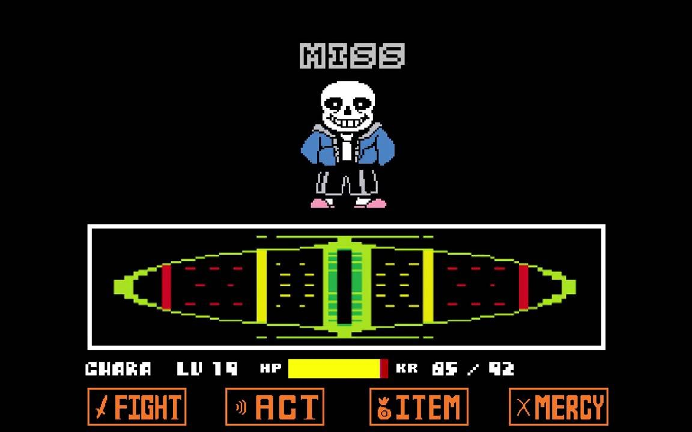

Sans é um esqueleto baixo que tem ossos largos, com um grande sorriso em seu rosto. Ele veste uma blusa com capuz de cor azul com o zíper aberto, uma camiseta/um suéter branco, uma bermuda preta com listras brancas e um par de tênis/pantufas
Ele tem pupilas brancas, que tendem a desaparecer quando ele está sério. Quando ele está usando algum tipo de magia, seu olho esquerdo brilha em azul ciano e amarelo, enquanto sua pupila direita desaparece.
Personagem SANS!